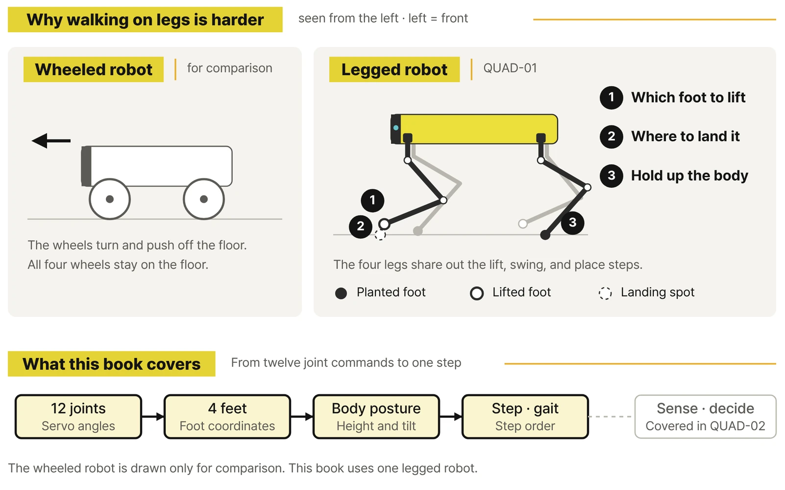

SAMPLE · Preview
Walking on legs
instead of wheels
Excerpts from the prologue and the opening of Chapter 1, translated from the Korean edition.
Prologue
What it means to walk on legs instead of wheels
A wheeled robot moves by pushing its wheels against the floor. A legged robot also has to lift a foot and set it down somewhere else. Which foot lifts first, where does the lifted foot land, and meanwhile, how do the remaining feet hold up the body? These questions come up naturally the moment you watch the robot actually walk.

Load the finished QUAD-01 and press W, and the body moves forward. Let go of the key and it stops walking and returns to its default pose. In the first chapter, that experience is enough. Follow the robot's four feet and watch the body move. If it moves in a way you didn't expect, you don't need to look up a formula or fill in a record sheet yet.
A little later you switch to the ACTION model and run a standing greeting, sitting and waving, and a leg stretch. It becomes clear that the robot isn't just something that walks; it's a machine that combines its joints into many different poses.
PART 1 · EXPERIENCE
CHAPTER 01. Get a four-legged robot walking from its first step
1.2 Stand, walk forward, and stop
Tap W. The robot holds its body up and starts moving forward. At first, press it only briefly and let go. When you release the key, it stops walking and returns to the default pose. Press W again and it starts walking forward from where it is.
Now press X once. In WALK, X sets the stop pose. Press Z and the robot lowers into a relaxed pose. Switch between X and Z and just watch how the way it stands changes.
| Key | What happens on screen | How to press |
|---|---|---|
| W | Walk forward | Hold it down |
| X | Steady stop pose | Press once |
| Z | Lowered, relaxed pose | Press once |
| 0 | Relax, then end the WALK script | Press once to finish |
1.3 Watch the feet move and the body follow
When the robot moves forward, its four feet don't all lift at once. Some feet stay planted while others lift and move ahead. Turn the camera to the side and zoom in a little, and you can see the moment a foot leaves the floor and the moment it comes back down. For now, it's enough to come away with this: one key moves all four feet together.
Page previews
Images of actual pages from the book.
You can watch Chapter 1 in the WALK video. Which foot lifts when, and how to change that order, continue in PARTs 2 and 5 of the book.